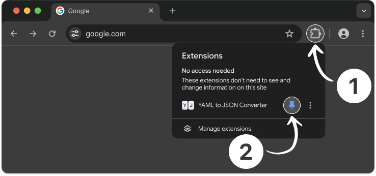
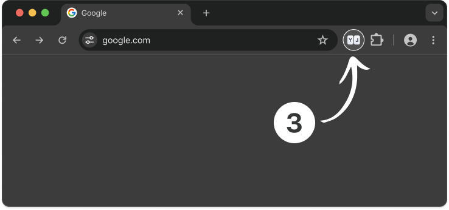

YAML to JSON Converter
Successfully Installed
-
Pin the extension for quick access to the YAML to JSON Converter
 -
Simply click on the extension icon to open the converter

Pin the extension for quick access to the YAML to JSON Converter
Simply click on the extension icon to open the converter